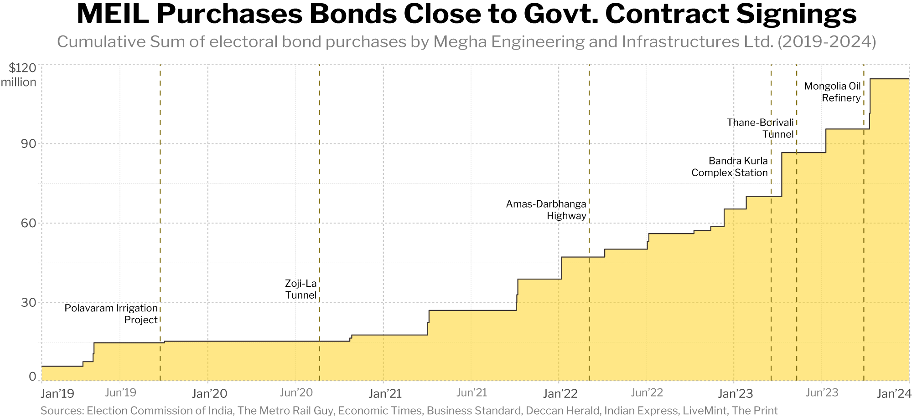

In 2017, the Government of India introduced a novel system for political party funding: Electoral Bonds. These functioned like anonymous bearer bonds, or anonymous no-limit bonds that do not need to be paid back (functionally, donations). The idea was to cleanse campaign financing by replacing opaque cash donations with a supposedly transparent system. In this system, any Indian entity could purchase any amount of electoral bonds from the State Bank of India and give them to a party of their choice, which would then withdraw it for political funds. However, critics saw a glaring loophole. With anonymity for donors, the potential for undue influence from corporations or wealthy individuals was large. The Supreme Court of India validated these concerns by deeming the Electoral Bond Scheme unconstitutional and ordering the release of all data pertaining to the purchase and withdrawal of electoral bonds between 2019 and 2024. We will explore the potential misuse of these bonds by focusing on Megha Engineering and Infrastructure Ltd. (MEIL) and Future Gaming and Hotel Services Pvt. Ltd., the top two purchasers who collectively donated over 15% of all electoral bonds – a staggering $268 million.
Megha Engineering and Infrastructure Ltd. (MEIL) is a major Indian infrastructure company established in 1989 and headquartered in Hyderabad, India. It is a multi-sector engineering giant, undertaking projects in transportation, petrochemicals, irrigation, and several other key areas. MEIL's presence extends beyond India, across over 20 countries worldwide. MEIL was the second highest purchaser of electoral bonds, donating the equivalent of about $116 million to various political parties between 2019 and 2024. In the graph below, we see the cumulative sum of electoral bond donations by MEIL along with key project signings in the same time frame.
In the above graph, we notice a strange pattern. Most contract signings are either predicted by or foreshadow the purchase of a significant sum of electoral bonds, especially in recent years. This raises several suspicions with regard to the impartiality of the government contract awarding process. This suggests the possibility of political bribery by MEIL in order to win large-scale government infrastructure projects. This, in conjunction with recorded cases where MEIL was awarded projects despite not being the lowest bidder (like in the case of the Thane-Borivali Tunnel), displays the blatant misuse of the electoral bond scheme for corporate gain.
Founded in 1991 by India’s ‘Lottery King’ Santiago Martin, Future Gaming and Hotel Services Pvt. Ltd. is a Coimbatore, India-based company with a prominent presence in the Indian lottery industry. Despite the "Hotel Services" in its name, Future Gaming's core business revolves around lottery distribution and management. They boast a vast network of dealers, stockists, and agents across various Indian states where lotteries are legal. It was the top purchaser of electoral bonds, purchasing about $152 million. The company, its founder, and his associates have been probed and raided several times by enforcement agencies, primary for issues linked to money laundering.
Information about Future Gaming and Hotel Services was not as readily available since it is a private company with small scale operations as compared to MEIL’s large-scale government-linked infrastructure projects. So, we can get a sense of the importance of electoral bonds to Future Gaming’s operations by comparing its expenditure on electoral bonds to its profits during that time.
We see that, between 2019 and 2023, Future Gaming and Hotel Services bought almost 5x its profit (after taxes) in electoral bonds. Clearly, then, electoral bonds are central to Future Gaming’s operations. There are various ways in which this could be possible, from applying political pressure and prevent unfavourable lottery laws to using influence for “help” when being raided. Future gaming is yet another example of a corrupt corporation using electoral bonds to influence politicians and earn favours.
We have only explored the story of the top two electoral bond donors. However, there are thousands of stories to be uncovered if one looks deep into the electoral bond dataset. Many, if not most, of these companies and individuals have used a political funding vehicle for their own personal gain while hiding behind the garb of anonymity. The Supreme Court of India’s decision to pull back this garb and reveal these ugly stories shows the people the corrupt reality of Indian politics.
Election Commission of India, Electoral Bond Data
The Metro Rail Guy, MEIL wins Amas Darbhanga Expressway's Construction Work
The Metro Rail Guy, L&T & MEIL Win Thane – Borivali Tunnel Project’s Work in Mumbai
Economic Times, MEIL secures Rs 5,400 cr crude oil refinery project in Mongolia
Business Standard, MEIL wins order for 47 oil and gas rigs from ONGC, to commission 15 by May
Deccan Herald, Megha Engineering Company to Build Zoji-La Pass Tunnel
Indian Express, MEIL gets Polavaram contract; AP govt says Rs 780 crore saved
The Print, Agreement signed to design, construct bullet train station at Mumbai’s Bandra Kurla Complex
The Times of India, Future Gaming’s Santiago Martin on ED, IT radar for over a decade
Business Standard, Future Gaming, others halted govt's plans to amending lottery rules
Economic Times, Future Gaming’s Santiago Martin: Under ED, I-T’s lens for a decade, this 'Lottery King' bought electoral bonds worth Rs 1,368 cr